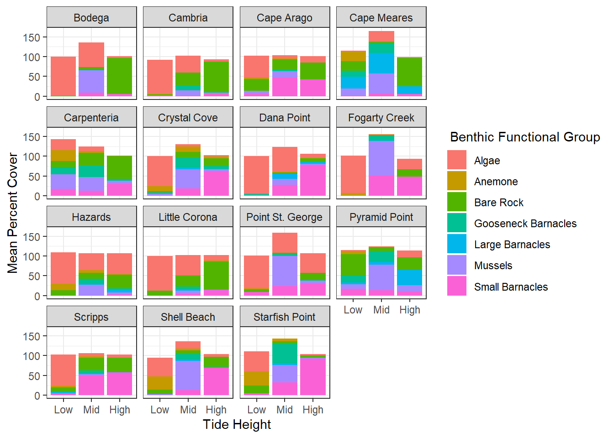

library(tidyverse)
library(tidytext)
library(janitor)
library(here)Week 9 HW
Load Libraries
Load data
inter_dat <- read_csv(here("week_09", "data", "intertidaldata.csv"))
inter_dat_lat <- read_csv(here("week_09", "data", "intertidaldata_latitude.csv"))Clean data
inter_dat_lat_clean <- inter_dat_lat %>%
clean_names() #clean column names
inter_dat_clean <- inter_dat %>%
clean_names() %>% #makes all the column names clean with snake case
mutate(quadrat_clean = str_extract(quadrat, "\\b(Low|Mid|High)\\b")) #extracts a clean low mid high
#summarize the data
inter_dat_mean <-inter_dat_clean %>%
group_by(site, transect, quadrat_clean) %>% #group by site transect and tide level
summarise(bare_rk_mean = mean(bare_rock, na.rm=TRUE), #find the mean of everything
algae_mean = mean(algae, na.rm=TRUE),
mussels_mean = mean(mussels, na.rm=TRUE),
small_barnacles_mean = mean(small_barnacles, na.rm=TRUE),
large_barnacles_mean = mean(large_barnacles, na.rm=TRUE),
gooseneck_barnacles_mean = mean(gooseneck_barnacles, na.rm=TRUE),
anemone_mean = mean(anemone, na.rm=TRUE),
.groups = "drop") %>%
group_by(site, quadrat_clean) %>% #regroup at the site and tide level
summarise(across(bare_rk_mean:anemone_mean, \(x) mean(x, na.rm = TRUE)), #find the mean at site level
.groups = "drop") %>%
mutate(quadrat_clean = factor(quadrat_clean, levels = c("Low", "Mid", "High"))) %>% #make tide a factor for ploting
#pivot longer so you can graph data
pivot_longer(cols = bare_rk_mean:anemone_mean,
names_to = "benthic_functional_group",
values_to = "mean_cover")Plot data
inter_dat_mean %>%
#change the names to be cleaner for the graph
mutate(benthic_functional_group = recode(benthic_functional_group,
"bare_rk_mean" = "Bare Rock",
"algae_mean" = "Algae",
"mussels_mean" = "Mussels",
"small_barnacles_mean" = "Small Barnacles",
"large_barnacles_mean" = "Large Barnacles",
"gooseneck_barnacles_mean" = "Gooseneck Barnacles",
"anemone_mean" = "Anemone")) %>%
ggplot(aes(x= quadrat_clean, y= mean_cover, fill = benthic_functional_group))+
geom_col(position = "stack") + #make it a stacked bar chart
facet_wrap(~site) + #make a graph for each site
theme_bw() +
scale_color_viridis_d() + #color blind friendly
labs(fill = " Benthic Functional Group", #change names
x = "Tide Height",
y= "Mean Percent Cover")
#save figure
ggsave(here("week_09", "outputs","intertidalmeans.png"))

If you look at Figure 1 you can see that some sites have a Percent cover of over 100. This is due to sampling error. When looking back at the raw data it appears that some transects had over 100 percent when adding up all the benthic functional groups.